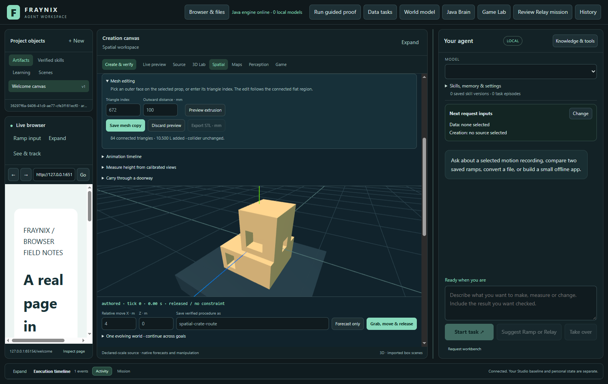
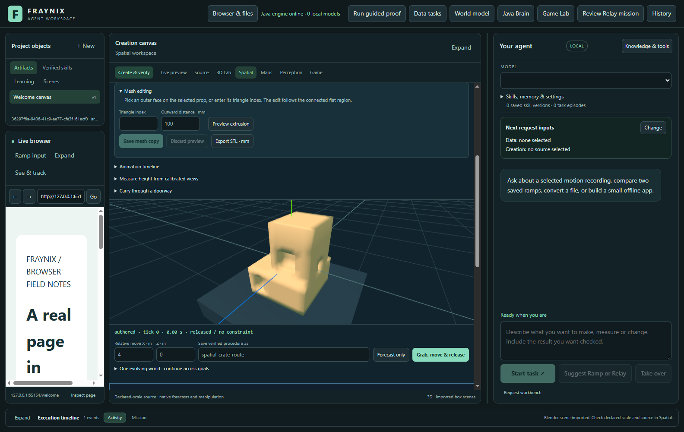

Edit a mesh and export a metric STL
Fraynix extrudes an outer face region, preserves the collider, and exports editable Blender geometry or a checked STL.
The 100 mm extrusion added 10.5 L. Blender 4.5 LTS checked the shell and measured the STL at 600 mm tall. The returned native scene has a further 25 mm of cap movement.

Fraynix previews the 100 mm extrusion

The Blender-edited shell has returned to Fraynix
System files
Open source